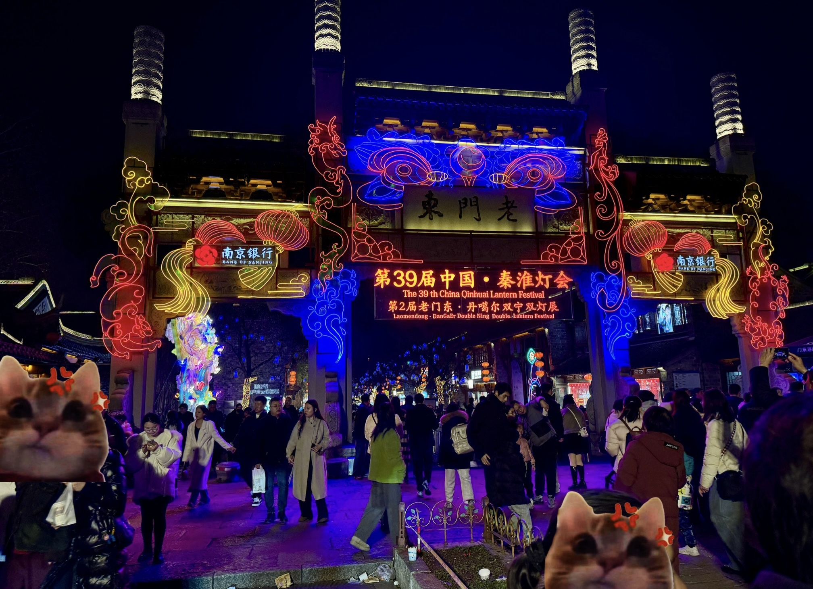
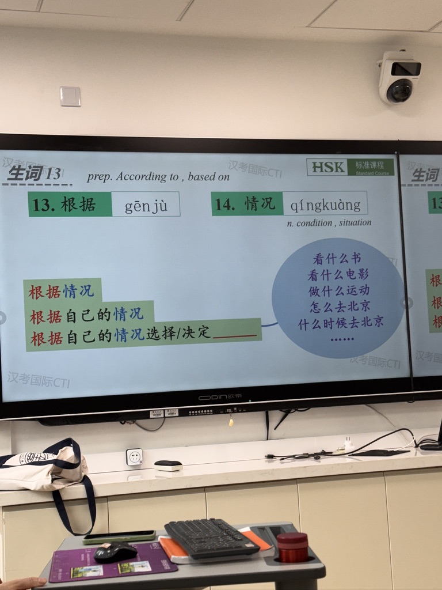
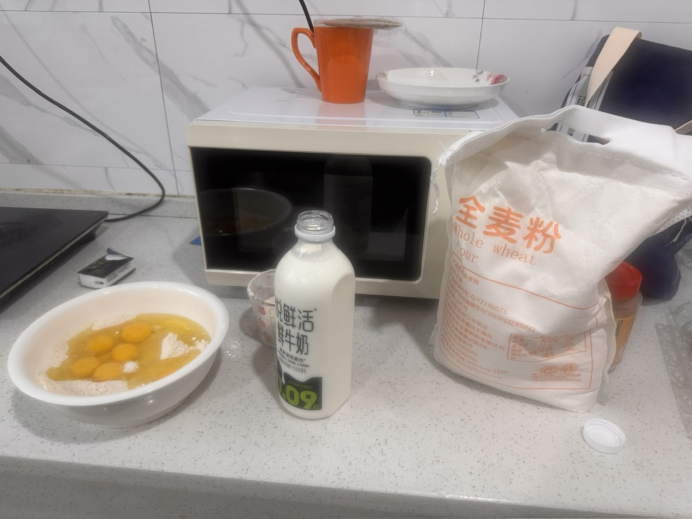
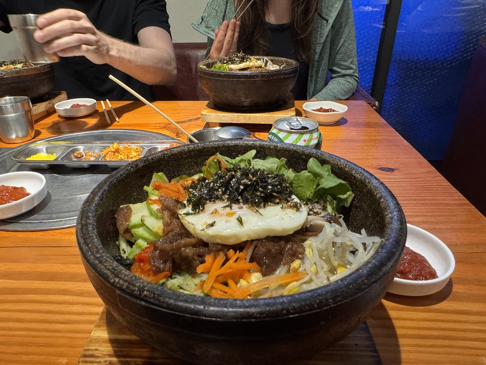
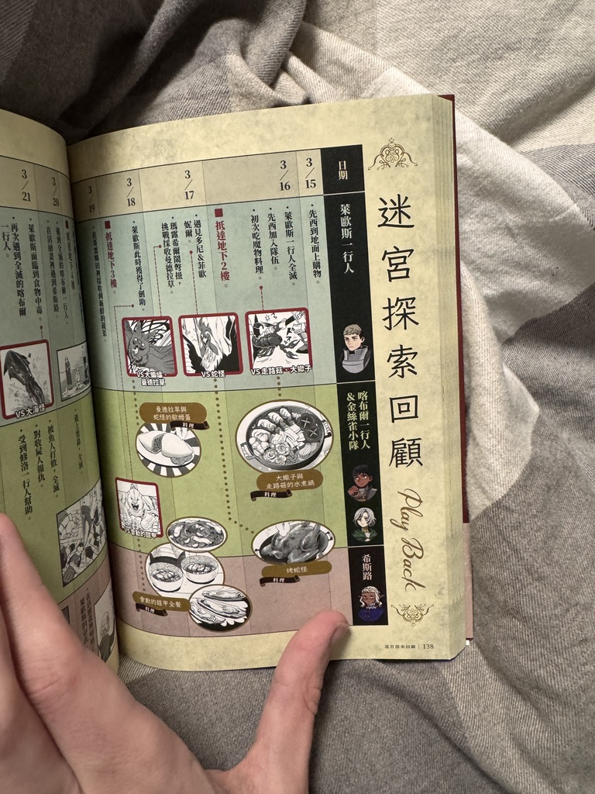
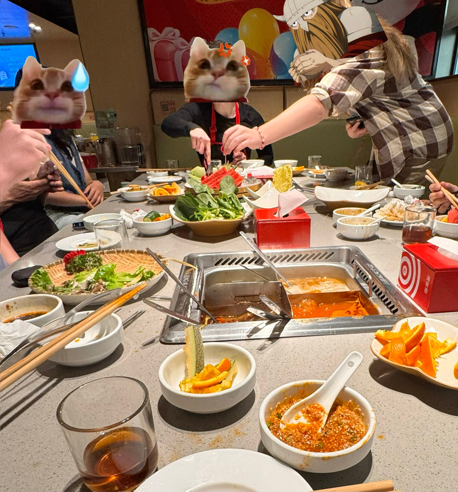
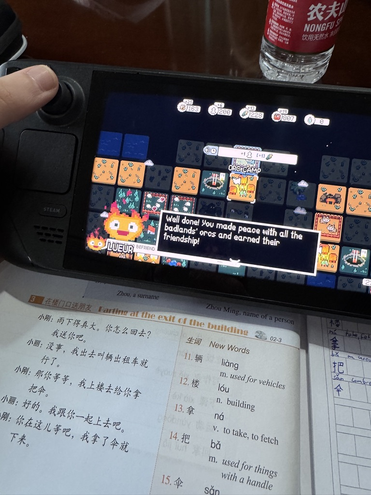
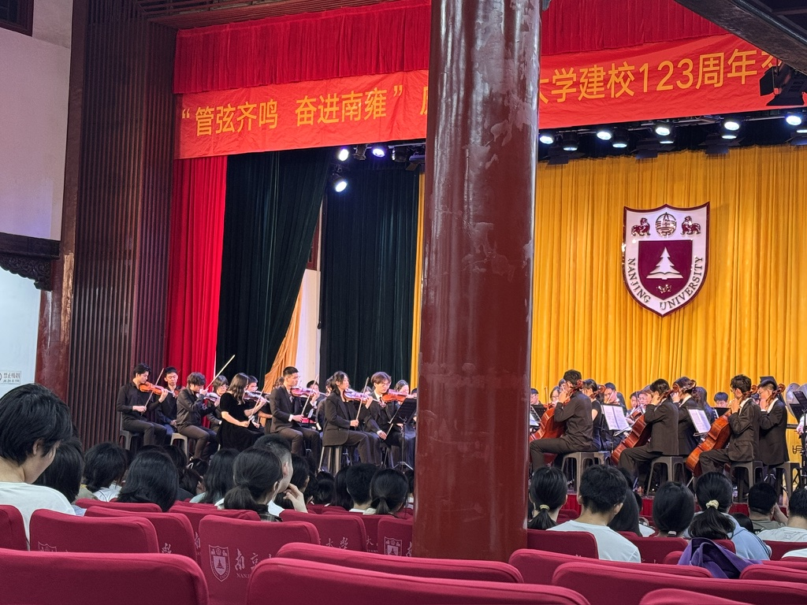
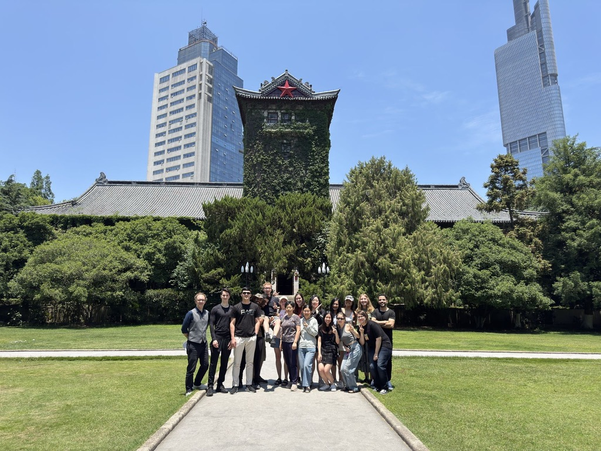
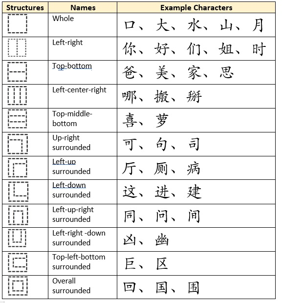

语言留学生
Studying Mandarin in Nanjing, China — 2025
My Learning Story
Why Chinese, and what that meant in practice.
Have you ever wanted to challenge your view on culture and society, or step outside your comfort zone? Deciding to learn Chinese did just that for me — let me explain how and what I mean by this.
By learning a new language, you not only acquire the skill to read and speak it, but you also become more immersed in the culture in which it is spoken. Being aware of this can make the entire process more fun and fulfilling.
The main factor that accounts for being consistent with learning and turning it into a habit is motivation. However, there isn't just one blueprint to follow in order to reach it — it heavily relies on personal circumstances and preferences. You have to ask yourself: what's the reason for wanting to learn this language?
- Is it just pure boredom?
- Do I want to travel to another country?
- Do I have friends or family who speak that language?
- Do I want to challenge my worldview and be open to new experiences?
The last factor was my personal reason. Depending on what your reason might be, it can significantly impact your motivation and the time required to study and reach your personally set goals.
Below, I'll lay out how exactly I started, what resources I used, what my progress looks like, and what I have learned throughout my studies — starting from using simple apps, all the way to living in China and studying in one of the most populated cities.
Learning Resources
My personal ranking after using these consistently.
The ranking reflects what is most useful to me right now and may change over time. All of these have been genuinely helpful at different stages.
Most importantly: apply what you learn. Writing, speaking, and talking with native speakers reinforces vocabulary far more effectively than passive study.
Journey Timeline
14 weeks of classes, food, friends, and unexpected concerts.
-
Phase 1.1
Week 1–2

-
Phase 1.2
Week 2–4

- Phase 1.3 Week 5–6
-
Phase 1.4
Week 6

-
Phase 1.5
Week 7

-
Phase 1.6
Week 8–9

-
Phase 1.7
Week 10

- Phase 2.1 Week 11
-
Phase 2.2
Week 12

-
Phase 2.3
Week 13

-
Phase 2.4
Week 14

Progress
A breakdown of each phase from the timeline above.
Exploration
I arrived in China on February 2nd, marking my third visit to the country.
Traveling in China can be quite challenging for foreigners who come unprepared. Fortunately, having already visited twice before, I was able to focus entirely on exploring the city, Nanjing.
Before moving into my dorm, I had a couple of weeks to myself. During this time, I explored the campus area and tried out the nearby food options on my own, as I hadn't yet met my fellow classmates.
The weather was still cold, and the days were short. Luckily, my arrival coincided with the Lantern Festival. Seeing the old town district illuminated with countless glowing lanterns was a truly mesmerizing experience. (I will cover more about the first month in an upcoming blog post)
First Language Classes
Having classes in China is quite a unique experience for someone coming from Europe.
The first week of classes acted as an orientation week to find the right difficulty for us. We were able to sit down, participate, and switch to a higher or lower level if we chose.
Already having learned Chinese before made me quite confident in picking the higher Elementary level, and I even played with the idea of choosing the lower Intermediate class — this was before I actually took any classes.
It turned out I was overconfident. The classes and content were much more difficult than initially anticipated, which is why I settled for the higher Elementary course.
I was able to understand a lot of the words, but the difficulty quickly ramped up in the coming weeks, as the main teacher only spoke Mandarin and didn't use any English to explain new concepts. That proved to be quite the challenge for me and my classmates.
First Impressions
There were still a few things I hadn't experienced during my first two visits to China.
This time, instead of sightseeing, I focused on living as I normally would back home. That way, it was easier to notice the direct differences in everyday life.
One clear example is the subway and train system. To enter the subway, passengers must first purchase a ticket or pay with a QR code or NFC — it's impossible to pass the security checkpoint without doing so. At most checkpoints, security requires passengers to hand over their water bottles for scanning, and sometimes they even ask you to take a sip before passing through. Bags must also be scanned, with their contents displayed on a monitor for inspection.
The process at train stations is very similar, with the main difference being the need to present a passport. While the procedure may seem strict at first, it actually makes traveling feel much safer, and the entire process only takes a few seconds.
Pastry Cravings
It was bound to happen sooner or later — my first night out in the city.
Before heading out for drinks with my German classmate, I met up with Masha, my Russian friend. We were both craving something sweet, so we decided to make pancakes together. Masha was already familiar with the dormitory kitchen, so she took charge of the cooking while I went to the nearest supermarket to buy the ingredients.
By the time we finished, it was already evening, and I had just enough time to head out and meet my other friend for a couple of drinks.
Reading Attempt
I wanted to challenge myself by reading a Chinese book. Unfortunately, the book I bought turned out to be written in Cantonese rather than Mandarin.
Although Cantonese and Mandarin share many similarities, their grammar, vocabulary, and pronunciation differ significantly. This made it nearly impossible for me to read even a single line.
For example, the word for "to give" is entirely different in each:
Farewell Lunch
All good things eventually come to an end.
During the first few weeks, many new friendships formed — one of them with our witty and humorous friend from the UK. We were surprised when he suddenly announced his decision to change plans, travel to America, and take part in organizing a summer camp.
Before he left the language course at the university, we gathered with several friends — including our teacher — and went to Haidilao for a hotpot dinner.
How do I start?
Practical advice from someone who did it wrong first.
The way I started was by loading up Duolingo to get a first impression of the language. At the beginning, it felt quite simple. The app introduces users to Pinyin (拼音, pīnyīn), the Romanization system for Chinese, alongside Hanzi (汉字, hànzì), the Chinese characters. Unlike the Roman alphabet, Chinese characters represent meaning rather than sound.
One important tip: commit early on to learning Hanzi while also practicing the pronunciation of Pinyin. This is crucial if you want to actually speak the language and not just read or write it. If you skip this step and try to fix your pronunciation later, it will almost certainly be much more difficult. A very useful resource is this interactive Pinyin chart: Yoyo Chinese – Chinese learning tools.
It's also recommended to start understanding how Chinese characters are constructed early on. This makes it easier to recognize new characters, as many share common parts. Most characters consist of two components: one semantic (symbolic) component and one phonetic component.

Example: Character Structure
For example, the character 姐 consists of two parts:
- Left: semantic component 女, meaning female, woman.
- Right: phonetic component 且, pronounced qiě.
Together, the meaning of the character is big sister. Some characters consist of three components; others are simple single-component characters like 口, 大, and 水.